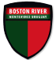
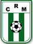
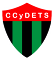
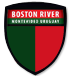
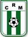
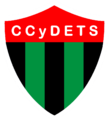

Tabla Copa Chori
| Tabla Chori | ||
|---|---|---|
| Cuadro | Escudo | Puntos |
| Boston River |  | 15 |
| Cerro | 13 | |
| Danubio | 10 | |
| Defensor |  |
9 |
| Nacional | 8 | |
| Peñarol | 6 | |
| Racing |  | 5 |
| Tanque |  | 4 |
| Wanderers | 2 | |
| Sudamerica | 5 | |
| Tabla Chori | ||
|---|---|---|
| Cuadro | Escudo | Puntos |
| Boston River |  | 15 |
| Cerro | 13 | |
| Danubio | 10 | |
| Defensor | |
9 |
| Nacional | 8 | |
| Peñarol | 6 | |
| Racing |  | 5 |
| Tanque |  | 4 |
| Wanderers | 2 | |
| Sudamerica | 5 | |